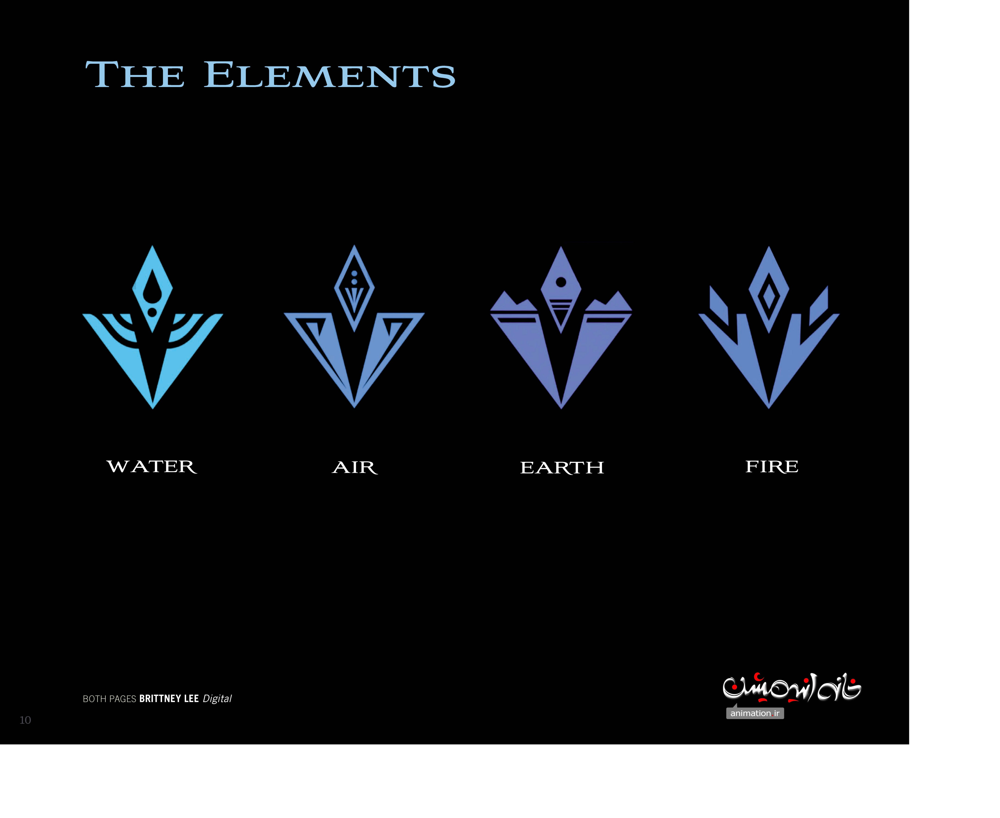

🎬 制作 · 番外制作
"Myth: A Frozen Tale（神话：冰雪传说，2019/2020）"
番外制作
形式：VR 短片（Jeff Gipson 执导），2019 随电影2登场，2020-06-11 登陆 Oculus Quest，2021-02-26 推出 Disney+ 平面版。简介：由 Evan Rachel Woo…

四元素 · 元素符号页《Myth: A Frozen Tale》：VR 里的神话重述——四大元素符号正是这部意象短片的视觉字母表。 | 来源：官方设定集《The Art of Frozen II》
📖 Myth: A Frozen Tale（神话：冰雪传说，2019/2020）
形式：VR 短片（Jeff Gipson 执导），2019 随电影2登场，2020-06-11 登陆 Oculus Quest，2021-02-26 推出 Disney+ 平面版。简介：由 Evan Rachel Wood 讲述四大元素之灵（风/地/火/水）的起源神话，呼应电影2世界观。时间线位置：电影2同期世界观衍生，独立于主线叙事。
来源：Disney 官方 / Frozen 衍生短片（Fandom / Wikipedia）
📌 本页要点
你正在阅读《制作》卷的「"Myth: A Frozen Tale（神话：冰雪传说，2019/2020）"」。本页由电影正典、官方设定集与官方小说综合梳理，可作为该主题的速查入口；右侧目录可快速跳转到本页各小节。